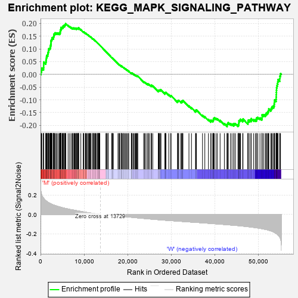
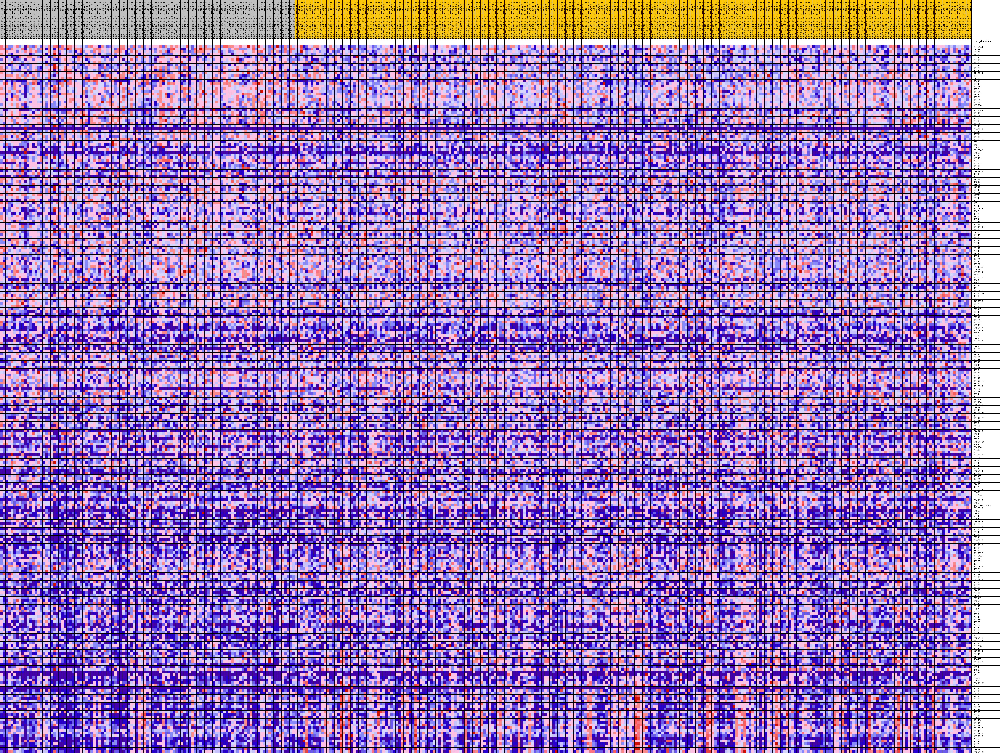
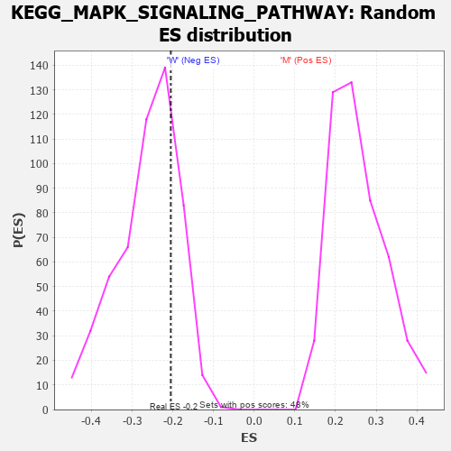

| Dataset | MUC16.MUC16.cls#M_versus_W.MUC16.cls#M_versus_W_repos |
| Phenotype | MUC16.cls#M_versus_W_repos |
| Upregulated in class | W |
| GeneSet | KEGG_MAPK_SIGNALING_PATHWAY |
| Enrichment Score (ES) | -0.2050274 |
| Normalized Enrichment Score (NES) | -0.7796281 |
| Nominal p-value | 0.7692308 |
| FDR q-value | 0.9787596 |
| FWER p-Value | 1.0 |

| PROBE | DESCRIPTION (from dataset) | GENE SYMBOL | GENE_TITLE | RANK IN GENE LIST | RANK METRIC SCORE | RUNNING ES | CORE ENRICHMENT | |
|---|---|---|---|---|---|---|---|---|
| 1 | RPS6KA1 | na | 78 | 0.237 | 0.0098 | No | ||
| 2 | CASP3 | na | 207 | 0.209 | 0.0173 | No | ||
| 3 | HSPA8 | na | 300 | 0.196 | 0.0249 | No | ||
| 4 | MKNK2 | na | 680 | 0.168 | 0.0259 | No | ||
| 5 | DUSP4 | na | 717 | 0.166 | 0.0331 | No | ||
| 6 | PPP3CA | na | 722 | 0.165 | 0.0409 | No | ||
| 7 | MAPK1 | na | 734 | 0.165 | 0.0485 | No | ||
| 8 | DUSP2 | na | 1198 | 0.142 | 0.0467 | No | ||
| 9 | MAP2K3 | na | 1237 | 0.141 | 0.0527 | No | ||
| 10 | FLNB | na | 1283 | 0.139 | 0.0584 | No | ||
| 11 | RPS6KA4 | na | 1332 | 0.137 | 0.0640 | No | ||
| 12 | CRK | na | 1385 | 0.135 | 0.0695 | No | ||
| 13 | CHUK | na | 1459 | 0.132 | 0.0744 | No | ||
| 14 | NR4A1 | na | 1652 | 0.127 | 0.0769 | No | ||
| 15 | CHP1 | na | 1690 | 0.126 | 0.0822 | No | ||
| 16 | MAP2K1 | na | 1733 | 0.124 | 0.0873 | No | ||
| 17 | GRB2 | na | 1842 | 0.121 | 0.0910 | No | ||
| 18 | MAP3K5 | na | 1845 | 0.121 | 0.0967 | No | ||
| 19 | AKT1 | na | 1908 | 0.119 | 0.1011 | No | ||
| 20 | NFKB1 | na | 2122 | 0.114 | 0.1026 | No | ||
| 21 | MAP2K4 | na | 2246 | 0.111 | 0.1056 | No | ||
| 22 | MAPK9 | na | 2291 | 0.110 | 0.1100 | No | ||
| 23 | MAP3K4 | na | 2323 | 0.109 | 0.1146 | No | ||
| 24 | NRAS | na | 2362 | 0.108 | 0.1190 | No | ||
| 25 | PLA2G4E | na | 2414 | 0.107 | 0.1232 | No | ||
| 26 | MAPK8 | na | 2419 | 0.107 | 0.1282 | No | ||
| 27 | MAP3K7 | na | 2438 | 0.107 | 0.1329 | No | ||
| 28 | PRKX | na | 2534 | 0.105 | 0.1361 | No | ||
| 29 | BRAF | na | 2618 | 0.103 | 0.1395 | No | ||
| 30 | MAP3K2 | na | 2644 | 0.103 | 0.1439 | No | ||
| 31 | DUSP10 | na | 2940 | 0.097 | 0.1431 | No | ||
| 32 | PLA2G1B | na | 2946 | 0.097 | 0.1476 | No | ||
| 33 | PPP5C | na | 3046 | 0.095 | 0.1503 | No | ||
| 34 | STMN1 | na | 3082 | 0.095 | 0.1542 | No | ||
| 35 | MAP3K6 | na | 3100 | 0.095 | 0.1583 | No | ||
| 36 | MAPKAPK3 | na | 3270 | 0.092 | 0.1596 | No | ||
| 37 | CRKL | na | 3310 | 0.092 | 0.1632 | No | ||
| 38 | MYC | na | 3574 | 0.088 | 0.1626 | No | ||
| 39 | CACNG5 | na | 3791 | 0.085 | 0.1627 | No | ||
| 40 | PLA2G4A | na | 4072 | 0.081 | 0.1614 | No | ||
| 41 | CACNG3 | na | 4329 | 0.077 | 0.1604 | No | ||
| 42 | EGFR | na | 4469 | 0.076 | 0.1615 | No | ||
| 43 | MAP4K2 | na | 4508 | 0.075 | 0.1643 | No | ||
| 44 | ATF2 | na | 4515 | 0.075 | 0.1678 | No | ||
| 45 | PLA2G3 | na | 4552 | 0.075 | 0.1706 | No | ||
| 46 | MAP3K8 | na | 4575 | 0.074 | 0.1738 | No | ||
| 47 | TRAF2 | na | 4652 | 0.073 | 0.1758 | No | ||
| 48 | CACNA1G | na | 4680 | 0.073 | 0.1788 | No | ||
| 49 | IKBKB | na | 4722 | 0.072 | 0.1815 | No | ||
| 50 | EGF | na | 4744 | 0.072 | 0.1845 | No | ||
| 51 | MAP2K2 | na | 4994 | 0.069 | 0.1832 | No | ||
| 52 | TAOK2 | na | 5135 | 0.068 | 0.1839 | No | ||
| 53 | MECOM | na | 5181 | 0.067 | 0.1862 | No | ||
| 54 | MAP4K1 | na | 5187 | 0.067 | 0.1893 | No | ||
| 55 | SOS1 | na | 5248 | 0.067 | 0.1914 | No | ||
| 56 | MAP2K5 | na | 5490 | 0.064 | 0.1900 | No | ||
| 57 | MKNK1 | na | 5557 | 0.063 | 0.1918 | No | ||
| 58 | RAF1 | na | 5570 | 0.063 | 0.1946 | No | ||
| 59 | FOS | na | 5710 | 0.062 | 0.1949 | No | ||
| 60 | MAX | na | 5729 | 0.062 | 0.1975 | No | ||
| 61 | ECSIT | na | 5781 | 0.061 | 0.1995 | No | ||
| 62 | RASGRP1 | na | 6336 | 0.055 | 0.1920 | No | ||
| 63 | RAC2 | na | 6694 | 0.052 | 0.1880 | No | ||
| 64 | IL1R2 | na | 7027 | 0.049 | 0.1842 | No | ||
| 65 | RELA | na | 7305 | 0.047 | 0.1814 | No | ||
| 66 | TAB1 | na | 7425 | 0.046 | 0.1814 | No | ||
| 67 | PPM1A | na | 7495 | 0.045 | 0.1823 | No | ||
| 68 | PTPN7 | na | 7728 | 0.043 | 0.1801 | No | ||
| 69 | MAPKAPK5 | na | 7837 | 0.043 | 0.1801 | No | ||
| 70 | MAPK13 | na | 7853 | 0.042 | 0.1819 | No | ||
| 71 | DAXX | na | 8022 | 0.041 | 0.1808 | No | ||
| 72 | FGF11 | na | 8203 | 0.039 | 0.1793 | No | ||
| 73 | MAPK7 | na | 8304 | 0.039 | 0.1793 | No | ||
| 74 | RRAS2 | na | 8315 | 0.039 | 0.1810 | No | ||
| 75 | PPM1B | na | 8477 | 0.037 | 0.1798 | No | ||
| 76 | DUSP7 | na | 8531 | 0.037 | 0.1806 | No | ||
| 77 | DUSP8 | na | 8691 | 0.035 | 0.1794 | No | ||
| 78 | ATF4 | na | 8701 | 0.035 | 0.1809 | No | ||
| 79 | ARRB2 | na | 8711 | 0.035 | 0.1823 | No | ||
| 80 | ELK1 | na | 8776 | 0.035 | 0.1828 | No | ||
| 81 | DUSP14 | na | 9255 | 0.031 | 0.1756 | No | ||
| 82 | PAK1 | na | 9813 | 0.026 | 0.1667 | No | ||
| 83 | NFKB2 | na | 9862 | 0.026 | 0.1670 | No | ||
| 84 | LAMTOR3 | na | 9945 | 0.025 | 0.1667 | No | ||
| 85 | CDC25B | na | 10285 | 0.023 | 0.1617 | No | ||
| 86 | MAP3K11 | na | 10340 | 0.022 | 0.1617 | No | ||
| 87 | AKT2 | na | 10469 | 0.021 | 0.1604 | No | ||
| 88 | MAPKAPK2 | na | 10656 | 0.020 | 0.1580 | No | ||
| 89 | RAC3 | na | 10829 | 0.019 | 0.1557 | No | ||
| 90 | TAOK1 | na | 11058 | 0.017 | 0.1524 | No | ||
| 91 | FGFR2 | na | 11154 | 0.017 | 0.1515 | No | ||
| 92 | TNF | na | 11311 | 0.015 | 0.1493 | No | ||
| 93 | MAP3K13 | na | 11391 | 0.015 | 0.1486 | No | ||
| 94 | PLA2G12A | na | 11531 | 0.014 | 0.1468 | No | ||
| 95 | TP53 | na | 11609 | 0.014 | 0.1460 | No | ||
| 96 | NF1 | na | 12015 | 0.011 | 0.1391 | No | ||
| 97 | RAPGEF2 | na | 12034 | 0.011 | 0.1393 | No | ||
| 98 | SOS2 | na | 12058 | 0.011 | 0.1394 | No | ||
| 99 | TAB2 | na | 12132 | 0.010 | 0.1386 | No | ||
| 100 | HSPA1B | na | 12337 | 0.009 | 0.1353 | No | ||
| 101 | CD14 | na | 12478 | 0.008 | 0.1331 | No | ||
| 102 | IL1B | na | 12583 | 0.007 | 0.1315 | No | ||
| 103 | HSPA6 | na | 12620 | 0.007 | 0.1312 | No | ||
| 104 | MAP2K7 | na | 12815 | 0.006 | 0.1280 | No | ||
| 105 | MAPK3 | na | 13096 | 0.004 | 0.1230 | No | ||
| 106 | MAPK12 | na | 13114 | 0.004 | 0.1229 | No | ||
| 107 | CACNA1A | na | 13133 | 0.004 | 0.1228 | No | ||
| 108 | RASGRF1 | na | 13311 | 0.003 | 0.1197 | No | ||
| 109 | PAK2 | na | 13346 | 0.002 | 0.1191 | No | ||
| 110 | PTPRR | na | 13407 | 0.002 | 0.1181 | No | ||
| 111 | CACNG2 | na | 13435 | 0.002 | 0.1177 | No | ||
| 112 | PLA2G2A | na | 13500 | 0.001 | 0.1166 | No | ||
| 113 | STK3 | na | 13520 | 0.001 | 0.1163 | No | ||
| 114 | CACNB1 | na | 13616 | 0.001 | 0.1146 | No | ||
| 115 | DUSP9 | na | 15021 | -0.000 | 0.0891 | No | ||
| 116 | FAS | na | 15119 | -0.001 | 0.0874 | No | ||
| 117 | RASA1 | na | 15194 | -0.001 | 0.0861 | No | ||
| 118 | FGFR4 | na | 15492 | -0.002 | 0.0808 | No | ||
| 119 | MAP4K3 | na | 15497 | -0.002 | 0.0808 | No | ||
| 120 | FGF12 | na | 15538 | -0.002 | 0.0802 | No | ||
| 121 | CDC42 | na | 16352 | -0.007 | 0.0658 | No | ||
| 122 | MAP2K6 | na | 16445 | -0.007 | 0.0644 | No | ||
| 123 | FGF6 | na | 16467 | -0.008 | 0.0644 | No | ||
| 124 | RASA2 | na | 16559 | -0.008 | 0.0631 | No | ||
| 125 | PLA2G6 | na | 16721 | -0.009 | 0.0606 | No | ||
| 126 | GNA12 | na | 17795 | -0.015 | 0.0418 | No | ||
| 127 | MAPK8IP3 | na | 17921 | -0.015 | 0.0403 | No | ||
| 128 | HRAS | na | 18142 | -0.016 | 0.0370 | No | ||
| 129 | RPS6KA3 | na | 18233 | -0.017 | 0.0362 | No | ||
| 130 | FGF20 | na | 18546 | -0.018 | 0.0314 | No | ||
| 131 | PPP3R1 | na | 18549 | -0.018 | 0.0322 | No | ||
| 132 | ELK4 | na | 18572 | -0.018 | 0.0327 | No | ||
| 133 | FGF22 | na | 18626 | -0.019 | 0.0326 | No | ||
| 134 | PPP3CC | na | 18833 | -0.020 | 0.0298 | No | ||
| 135 | MAPK14 | na | 19076 | -0.021 | 0.0264 | No | ||
| 136 | CACNA2D2 | na | 19116 | -0.021 | 0.0267 | No | ||
| 137 | CACNA1D | na | 19330 | -0.022 | 0.0238 | No | ||
| 138 | FGF18 | na | 19532 | -0.023 | 0.0213 | No | ||
| 139 | TNFRSF1A | na | 19800 | -0.024 | 0.0176 | No | ||
| 140 | JUND | na | 19938 | -0.025 | 0.0162 | No | ||
| 141 | MAPK8IP2 | na | 20231 | -0.026 | 0.0122 | No | ||
| 142 | MAP3K1 | na | 20238 | -0.026 | 0.0133 | No | ||
| 143 | RELB | na | 20850 | -0.029 | 0.0036 | No | ||
| 144 | FASLG | na | 20865 | -0.029 | 0.0047 | No | ||
| 145 | IKBKG | na | 20948 | -0.029 | 0.0046 | No | ||
| 146 | CACNA1B | na | 20984 | -0.030 | 0.0053 | No | ||
| 147 | GNG12 | na | 21246 | -0.031 | 0.0020 | No | ||
| 148 | FGF17 | na | 21449 | -0.032 | -0.0001 | No | ||
| 149 | CHP2 | na | 21658 | -0.033 | -0.0024 | No | ||
| 150 | CACNA2D4 | na | 21832 | -0.033 | -0.0040 | No | ||
| 151 | RAC1 | na | 21990 | -0.034 | -0.0052 | No | ||
| 152 | CACNG4 | na | 22112 | -0.034 | -0.0058 | No | ||
| 153 | ARRB1 | na | 22203 | -0.035 | -0.0058 | No | ||
| 154 | NLK | na | 22339 | -0.035 | -0.0065 | No | ||
| 155 | PLA2G12B | na | 23686 | -0.041 | -0.0291 | No | ||
| 156 | PRKCA | na | 23890 | -0.042 | -0.0308 | No | ||
| 157 | MAPK11 | na | 24102 | -0.043 | -0.0326 | No | ||
| 158 | STK4 | na | 24452 | -0.044 | -0.0369 | No | ||
| 159 | TRAF6 | na | 24705 | -0.045 | -0.0393 | No | ||
| 160 | NFATC2 | na | 24748 | -0.045 | -0.0380 | No | ||
| 161 | CACNA1I | na | 25025 | -0.046 | -0.0408 | No | ||
| 162 | FGF23 | na | 25406 | -0.048 | -0.0455 | No | ||
| 163 | PRKACB | na | 25430 | -0.048 | -0.0436 | No | ||
| 164 | DUSP16 | na | 25481 | -0.048 | -0.0423 | No | ||
| 165 | DUSP6 | na | 25777 | -0.049 | -0.0453 | No | ||
| 166 | CACNG8 | na | 27031 | -0.054 | -0.0655 | No | ||
| 167 | IL1A | na | 27051 | -0.054 | -0.0633 | No | ||
| 168 | GADD45B | na | 27177 | -0.054 | -0.0630 | No | ||
| 169 | PDGFA | na | 27255 | -0.055 | -0.0619 | No | ||
| 170 | PRKACA | na | 27466 | -0.055 | -0.0631 | No | ||
| 171 | GADD45G | na | 27486 | -0.055 | -0.0608 | No | ||
| 172 | CACNA1E | na | 27666 | -0.056 | -0.0614 | No | ||
| 173 | CACNB3 | na | 28554 | -0.059 | -0.0747 | No | ||
| 174 | JMJD7-PLA2G4B | na | 28614 | -0.059 | -0.0730 | No | ||
| 175 | PLA2G10 | na | 28671 | -0.060 | -0.0712 | No | ||
| 176 | CACNG6 | na | 28812 | -0.060 | -0.0709 | No | ||
| 177 | CACNB2 | na | 29448 | -0.062 | -0.0795 | No | ||
| 178 | NTF4 | na | 29887 | -0.064 | -0.0845 | No | ||
| 179 | PDGFRA | na | 29978 | -0.064 | -0.0831 | No | ||
| 180 | CACNA1F | na | 31466 | -0.068 | -0.1069 | No | ||
| 181 | RPS6KA6 | na | 31508 | -0.069 | -0.1044 | No | ||
| 182 | PLA2G4B | na | 31612 | -0.069 | -0.1030 | No | ||
| 183 | PLA2G2F | na | 31735 | -0.069 | -0.1020 | No | ||
| 184 | RAP1B | na | 32211 | -0.071 | -0.1072 | No | ||
| 185 | FGF7 | na | 32420 | -0.072 | -0.1076 | No | ||
| 186 | HSPA1A | na | 32447 | -0.072 | -0.1047 | No | ||
| 187 | PLA2G2E | na | 32634 | -0.072 | -0.1047 | No | ||
| 188 | DUSP1 | na | 32697 | -0.073 | -0.1024 | No | ||
| 189 | PLA2G2D | na | 34084 | -0.077 | -0.1240 | No | ||
| 190 | TGFB2 | na | 34661 | -0.079 | -0.1307 | No | ||
| 191 | HSPA2 | na | 35601 | -0.081 | -0.1439 | No | ||
| 192 | RASGRP2 | na | 35644 | -0.082 | -0.1408 | No | ||
| 193 | RPS6KA2 | na | 35799 | -0.082 | -0.1398 | No | ||
| 194 | PPP3R2 | na | 37199 | -0.086 | -0.1611 | No | ||
| 195 | TGFBR1 | na | 37730 | -0.088 | -0.1666 | No | ||
| 196 | JUN | na | 38564 | -0.091 | -0.1775 | No | ||
| 197 | RASGRP3 | na | 39119 | -0.093 | -0.1832 | No | ||
| 198 | TGFB1 | na | 39139 | -0.093 | -0.1791 | No | ||
| 199 | RPS6KA5 | na | 39548 | -0.094 | -0.1821 | No | ||
| 200 | FGFR3 | na | 39647 | -0.094 | -0.1794 | No | ||
| 201 | PPP3CB | na | 39713 | -0.095 | -0.1761 | No | ||
| 202 | GADD45A | na | 39764 | -0.095 | -0.1726 | No | ||
| 203 | FGF5 | na | 39908 | -0.095 | -0.1707 | No | ||
| 204 | MEF2C | na | 40306 | -0.097 | -0.1733 | No | ||
| 205 | MAPK8IP1 | na | 40620 | -0.098 | -0.1744 | No | ||
| 206 | CACNG1 | na | 41234 | -0.100 | -0.1808 | No | ||
| 207 | PRKCG | na | 42215 | -0.103 | -0.1938 | No | ||
| 208 | KRAS | na | 42835 | -0.105 | -0.2000 | Yes | ||
| 209 | HSPA1L | na | 42856 | -0.106 | -0.1954 | Yes | ||
| 210 | CACNB4 | na | 43002 | -0.106 | -0.1930 | Yes | ||
| 211 | IL1R1 | na | 43107 | -0.106 | -0.1899 | Yes | ||
| 212 | DUSP5 | na | 43616 | -0.108 | -0.1940 | Yes | ||
| 213 | PDGFB | na | 43968 | -0.110 | -0.1952 | Yes | ||
| 214 | NTRK1 | na | 44381 | -0.111 | -0.1975 | Yes | ||
| 215 | FGF9 | na | 44428 | -0.111 | -0.1931 | Yes | ||
| 216 | FGF1 | na | 44759 | -0.113 | -0.1937 | Yes | ||
| 217 | MAP4K4 | na | 45330 | -0.115 | -0.1987 | Yes | ||
| 218 | TGFB3 | na | 45500 | -0.115 | -0.1963 | Yes | ||
| 219 | FGF21 | na | 45534 | -0.116 | -0.1914 | Yes | ||
| 220 | FGF4 | na | 45558 | -0.116 | -0.1864 | Yes | ||
| 221 | MRAS | na | 45579 | -0.116 | -0.1813 | Yes | ||
| 222 | DDIT3 | na | 45790 | -0.117 | -0.1796 | Yes | ||
| 223 | NGF | na | 45919 | -0.117 | -0.1764 | Yes | ||
| 224 | CACNA1S | na | 46425 | -0.120 | -0.1799 | Yes | ||
| 225 | RASGRP4 | na | 46495 | -0.120 | -0.1755 | Yes | ||
| 226 | FGF8 | na | 47610 | -0.126 | -0.1898 | Yes | ||
| 227 | PRKACG | na | 47650 | -0.126 | -0.1846 | Yes | ||
| 228 | BDNF | na | 47709 | -0.126 | -0.1797 | Yes | ||
| 229 | MAP3K14 | na | 48051 | -0.128 | -0.1799 | Yes | ||
| 230 | FGF14 | na | 48356 | -0.129 | -0.1793 | Yes | ||
| 231 | SRF | na | 48387 | -0.130 | -0.1737 | Yes | ||
| 232 | PDGFRB | na | 48945 | -0.133 | -0.1776 | Yes | ||
| 233 | RASGRF2 | na | 49342 | -0.135 | -0.1784 | Yes | ||
| 234 | NTRK2 | na | 49603 | -0.137 | -0.1766 | Yes | ||
| 235 | MAPT | na | 49628 | -0.137 | -0.1706 | Yes | ||
| 236 | TAOK3 | na | 49898 | -0.139 | -0.1689 | Yes | ||
| 237 | FGF19 | na | 50394 | -0.142 | -0.1712 | Yes | ||
| 238 | MOS | na | 50832 | -0.146 | -0.1722 | Yes | ||
| 239 | PLA2G5 | na | 50875 | -0.146 | -0.1661 | Yes | ||
| 240 | CACNG7 | na | 50876 | -0.146 | -0.1592 | Yes | ||
| 241 | CACNA2D1 | na | 51233 | -0.149 | -0.1586 | Yes | ||
| 242 | RRAS | na | 51615 | -0.153 | -0.1583 | Yes | ||
| 243 | FGF3 | na | 51774 | -0.154 | -0.1539 | Yes | ||
| 244 | NTF3 | na | 51994 | -0.157 | -0.1505 | Yes | ||
| 245 | HSPB1 | na | 52204 | -0.159 | -0.1467 | Yes | ||
| 246 | AKT3 | na | 52341 | -0.161 | -0.1416 | Yes | ||
| 247 | PRKCB | na | 52433 | -0.162 | -0.1356 | Yes | ||
| 248 | DUSP3 | na | 52901 | -0.168 | -0.1362 | Yes | ||
| 249 | FGF10 | na | 53062 | -0.171 | -0.1310 | Yes | ||
| 250 | FGFR1 | na | 53241 | -0.174 | -0.1260 | Yes | ||
| 251 | FGF16 | na | 53543 | -0.180 | -0.1229 | Yes | ||
| 252 | TGFBR2 | na | 53656 | -0.183 | -0.1164 | Yes | ||
| 253 | PTPN5 | na | 53702 | -0.184 | -0.1085 | Yes | ||
| 254 | CACNA1C | na | 53758 | -0.186 | -0.1007 | Yes | ||
| 255 | NFATC4 | na | 54089 | -0.194 | -0.0975 | Yes | ||
| 256 | MAPK10 | na | 54111 | -0.195 | -0.0887 | Yes | ||
| 257 | MAP3K3 | na | 54132 | -0.195 | -0.0798 | Yes | ||
| 258 | PLA2G2C | na | 54158 | -0.196 | -0.0710 | Yes | ||
| 259 | RAP1A | na | 54173 | -0.197 | -0.0620 | Yes | ||
| 260 | MAP3K12 | na | 54209 | -0.198 | -0.0533 | Yes | ||
| 261 | MAP3K20 | na | 54284 | -0.200 | -0.0452 | Yes | ||
| 262 | FLNC | na | 54369 | -0.203 | -0.0372 | Yes | ||
| 263 | FGF13 | na | 54485 | -0.207 | -0.0295 | Yes | ||
| 264 | FLNA | na | 54538 | -0.210 | -0.0205 | Yes | ||
| 265 | FGF2 | na | 54930 | -0.231 | -0.0167 | Yes | ||
| 266 | CACNA1H | na | 54970 | -0.235 | -0.0063 | Yes | ||
| 267 | CACNA2D3 | na | 55108 | -0.248 | 0.0029 | Yes |

